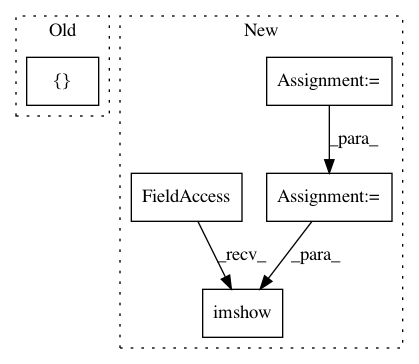

5ee8d4a1719a4c1070924351af9c2119432e7066,examples/attention_maps.py,,generate_saliceny_map,#Any#,11
Before Change
for path in ["../resources/ouzel.jpg", "../resources/ouzel_1.jpg"]:
seed_img = utils.load_img(path, target_size=(224, 224))
pred_class = np.argmax(model.predict(np.array([img_to_array(seed_img)])))
heatmap = visualize_saliency(model, layer_idx, [pred_class], seed_img)
if show:
After Change
seed_img = utils.load_img(path, target_size=(224, 224))
// Convert to BGR, create input with batch_size: 1, and predict.
bgr_img = utils.bgr2rgb(seed_img)
img_input = np.expand_dims(img_to_array(bgr_img), axis=0)
pred_class = np.argmax(model.predict(img_input))
heatmap = visualize_saliency(model, layer_idx, [pred_class], seed_img)
if show:
plt.axis("off")
plt.imshow(heatmap)
plt.title("Saliency - {}".format(utils.get_imagenet_label(pred_class)))
plt.show()
In pattern: SUPERPATTERN
Frequency: 3
Non-data size: 5
Instances
Project Name: raghakot/keras-vis
Commit Name: 5ee8d4a1719a4c1070924351af9c2119432e7066
Time: 2017-04-29
Author: ragha@outlook.com
File Name: examples/attention_maps.py
Class Name:
Method Name: generate_saliceny_map
Project Name: nipy/dipy
Commit Name: 749855e9d1b5bd1aa7b46db144503922fbc0a336
Time: 2013-08-06
Author: matthieu.dumont@usherbrooke.ca
File Name: doc/examples/brain_extraction_dwi.py
Class Name:
Method Name:
Project Name: raghakot/keras-vis
Commit Name: 5ee8d4a1719a4c1070924351af9c2119432e7066
Time: 2017-04-29
Author: ragha@outlook.com
File Name: examples/attention_maps.py
Class Name:
Method Name: generate_cam